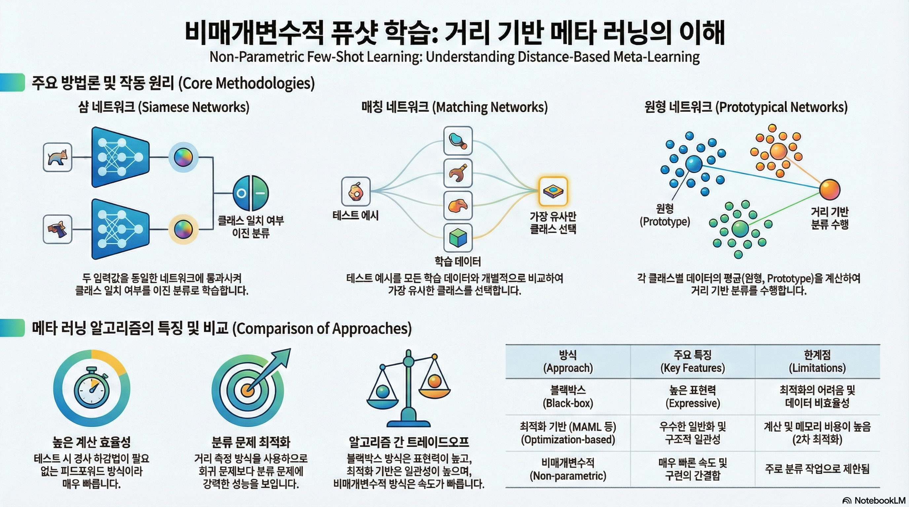
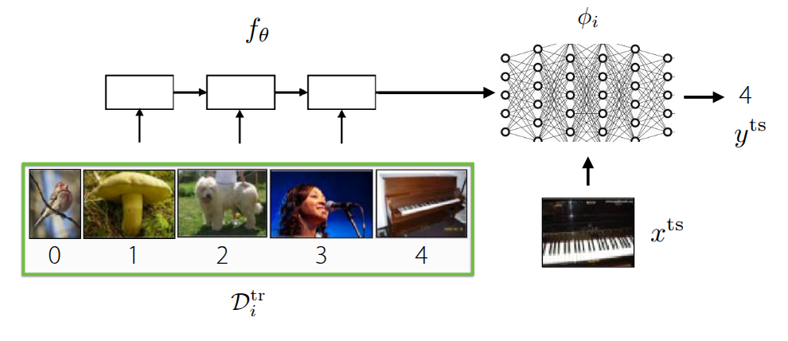
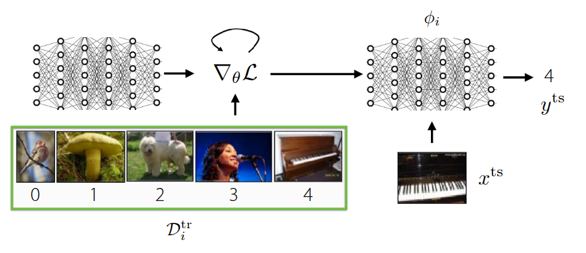
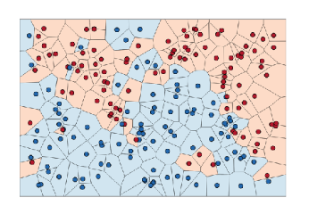
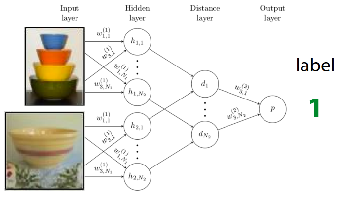
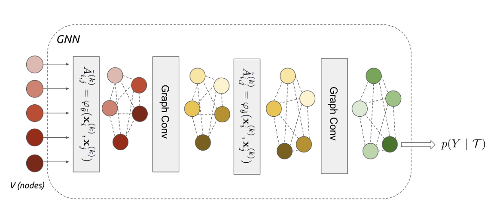
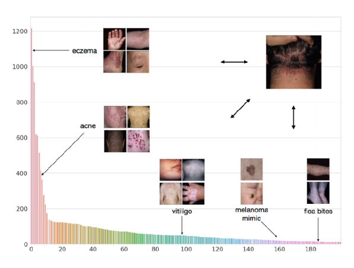
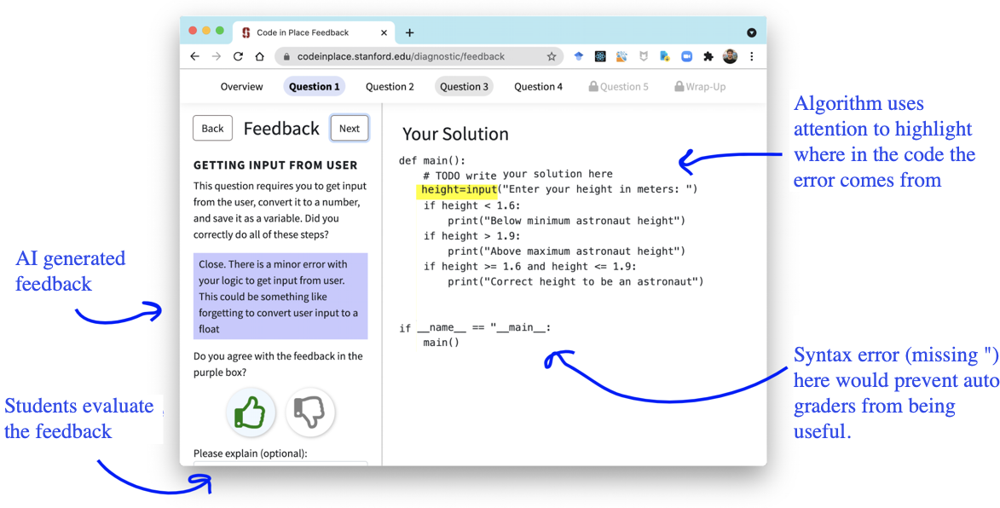

강의 및 자료


포스트에 소개되어 있는 자료는 강의 자료에서 따왔습니다.
Lecture Summary with NotebookLM

Recap
앞에서 다룬 Meta Learning 방법론 중 Black-Box Meta Learning과 Optimization-based Meta Learning에 대해서 다뤘다.


가장 먼저 언급했던 Black-Box Meta Learning (그림 1 (a)) 은 훈련 데이터 \(\mathcal{D}_{i}^{tr}\) 를 거대한 신경망에 통과시켜서 학습 과정 자체를 파라미터화(Parametrize) 하는 방식이다. 내부의 신경망의 동작에 대한 정의없이 마치 일종의 블랙박스와 같은 학습 형태로 되어 있고, 학습 데이터에 따라 모델의 출력도 제어할 수 있기 때문에 다양한 학습 절차를 표현할 수 있는 높은 표현력(Expressive)을 갖는 장점이 있지만, 어떤 hyperparameter를 가지고 있느냐에 따라 성능에 대한 차이도 크며, 이로 인해서 hyperparameter에 대한 최적화 과정이 매우 까다롭다. Optimization-Based Meta Learning (그림 1 (b)) 은 앞의 Black-Box Adaptation과는 다르게 학습 과정 중 inner-loop내에서 발생하는 Gradient Descent 같은 최적화 과정을 내재화하여, 일종의 Bi-level optimization 형태로 문제를 해결하는 접근 방법이다. 그림에도 그 과정이 소개되어 있다시피 학습 데이터 내에서 주어진 task에서의 정보를 학습할 수 있는 positive inductive bias를 outer-loop에서 활용할 수 있기 때문에, 학습 초기 단계에서 조금 더 빠르게 학습되며, bi-level optimization 과정을 통해서 외부의 새로운 데이터가 들어와도 이에 대한 extrapolation 성능도 이전 방법에 비해 좋은 편이다. 무엇보다도 최적화 과정에 초점이 맞춰져 있어서, 모델 구조와 무관하게(Model-agnostic) 해당 방법을 적용할 수 있고, 일반적으로 네트워크가 커지면 커질수록 expressive 성능도 개선된다. 다만 bi-level optimization을 해야 되기 때문에, 이로 인한 계산량과 메모리 소모가 큰 편이고, 학습 과정이 불안정하기 때문에 이를 극복하기 위한 다양한 연구에 대해서 지난 강의에서 소개했었다.
앞에서 소개한 두가지 방법 모두 meta-test 단계에서 학습되지 않은 새로운 task가 들어왔을 때, 이를 해결하기 위한 Task 고유의 parameter (\(\phi_i\))가 학습과정 내에서 정의된다. Black-Box 방식에서는 거대한 신경망을 통해서 학습 과정 자체가 파라미터화되며, Optimization-Based 방식에서도 inner-loop에서 Gradient Descent를 통해서 parameter가 업데이트된다. 이렇게 parameter가 정의되고 이를 기반으로 학습이 진행되는 방식을 Parametric Learning이라고 한다. 그런데 이렇게 파라미터화에서 학습을 수행하게 되면, 앞에서 언급된 단점들처럼 연산량과 메모리 소모량이 많아지고, 일반적인 성능 확보를 위해서는 다량의 데이터가 필요하게 된다. 특히 Optimization-based 방법에서는 bi-level optimization이 수행되면서 이런 단점이 더 부각된다. 그러면 이런 parameter를 일일히 연산하지 않고도 이런 학습 과정을 모델에 투영시키거나 반영할 수 있을까?
Non-Parametric Methods
앞에서 언급된 Parametric Model는 기본적으로 데이터에 대한 가정이 정의되어 있는 상태(예를 들어서 어떤 확률분포를 가진다? 같은…) 상태에서 입력 데이터와 출력 데이터간의 관계를 일종의 수학적으로 정의한 모델이고, 이런 데이터에 대한 가정없이 (결과적으로는 수학적으로 관계가 정의되지 않고), 데이터로부터 그 의미를 추출하는 방식을 Non-Parametric Model이라고 한다.

사실 이 개념은 신경망이 등장하기 전에도 나왔던 개념으로 흔히 알고있는 Decision Tree나 K-Nearest Neighborhood(KNN), Support Vector Machine(SVM) 등이 이 부류에 속한다. 각 알고리즘의 동작원리를 상기해보면 알겠지만, 대부분의 알고리즘이 데이터의 많고 적음을 떠나서 현재 상태에서의 데이터간의 관계를 도출해낼 수 있다. 특히 데이터가 매우 적은 상황(Low data regime) 에서도 Parametric 방식에 비해 구현도 쉬울 뿐더러 잘 동작하는 것을 확인할 수 있다. 그런데 이 low data regime의 상황을 meta learning에 투영해보면, meta-test 에서도 이와 유사하게 발생한다. 특히 meta test에서 수행하는 Few-Shot Learning 과 같은 경우는 학습되지 않은 task에 대한 sample (\(x^{ts}\))이 얼마없는 상황에서도 이에 맞는 label(\(y^{ts}\))을 추정해야 되는데, 앞의 Parametric model은 바로 이 과정에서 task parameter \(\phi_i\) 를 추론하면서 단점이 야기된다는 것이다.
그러면 한가지 고려해볼 수 있는 부분이, 실제로 다양한 task에 대한 representation 방법을 학습하는 meta-train단계에서는 이전에 소개했던 parametric model을 활용하되, Few-Shot Learning이 발생하는 meta-test단계에서는 앞단계에서 뽑은 정보를 활용하는 non-parametric model을 사용하는 일종의 하이브리드 방식이 이 있을 것이다.

그림 2 은 앞에서도 많이 소개되었던 Few-shot classification 예시이며, 이 그림에서 소개하는 근본적인 방법은 meta-test 단계에서 주어진 test 데이터(\(x^{ts}\))가 있을때, 이 데이터를 실제 meta-train단계에서 학습할때 활용했던 데이터와 비교하는 것이다. 비교 방법이 어떠하던지 간에, 기존 학습 데이터와 가장 유사한 데이터가 있으면 학습 데이터에서의 label을 따르게 하면 된다. 그러면 이제 관건은 “어떤 기준으로 학습 데이터와 테스트 데이터가 유사하다고 할까?”이다. 흔히 유사성을 측정하는 metric으로는 Euclidian Distance라고 \(\ell_2\) Distance같은 것도 있고, cosine similarity 같은 것도 있다. 우선은 이렇게 주어진 이미지들간의 \(\ell_2\) Distance로 유사성을 판단한다고 가정해보자.

그림 3 는 Zhang 기타 (2018) 논문에 소개된 실험 결과 중 하나로, 가장 오른쪽에 있는 Reference 이미지와 유사한 이미지를 왼쪽의 두개 이미지 중에서 찾는 것이다. 사람의 눈으로 봤을 때는 두개의 이미지 중 오른쪽의 이미지가 더 유사하다고 생각할 수 있겠지만, 앞에서 언급한 \(\ell_2\) Distance나 동일하게 유사도를 측정하는 metric인 Peak Signal-to-Noise Ratio(PSNR) 이나, Structural Similarity Index (SSIM), Feature-based Similarity Index (FSIM) 를 활용했을 때는, 오히려 왼쪽의 이미지가 더 유사하다고 나온다. 이처럼 이미지가 입력으로 들어오는 문제에서 유사도 기반의 metric으로 수행한 Non-parametric Learning은 의도와 다르게 동작할 가능성이 크다. 무엇보다도 이렇게 distance function을 어떤 것으로 정의하느냐도 다른 관점에서는 Parametric Learning이라고 볼 수 있는 여지가 생긴다. 그래서 강의에서 제안하는 방식은 이렇게 metric 자체를 측정하는 방법 자체를 meta-training data를 활용하여 학습하자는 것(Learn to Compare)이다.
Siamese Network for Non-Parametric Model


Siamese Network는 Bromley 기타 (1993) 에서 처음 소개된 간단한 신경망이 쌍둥이 형태로 되어 있는 구조로, 두개의 입력을 각각 받을 수 있는 신경망이 동일한 형태로 구성되어 완전히 동일한 parameter를 공유하는 방식으로 되어 있다. 원 논문에서는 Siamese Network을 활용하여 서명을 확인하는 예시로 소개되었다가, Koch (2015) 에서 해당 구조를 활용하여 One-shot learning에 적용한 사례로 발전되었다. 해당 논문에서 제안했던 부분은 앞에서 소개했던 Similarity Metric을 정의하지 말고, meta-train단계에서 training data와 test data 간의 Binary Classification을 수행하는 것이다. 이 때 학습이 잘되면 그림 4 에 나와있는 것처럼 유사한 이미지끼리는 \(1\), 서로 다른 이미지끼리는 \(0\) 이 나오는 형태로 Siamese Network이 학습이 될 것이고, 이 모델을 meta-test단계에서 일종의 유사도 측정기로 활용하게 된다. 그래서 test data가 주어지면, test data와 기존 support set에 있는 이미지를 하나씩 짝지어서 비교하는(Pairwise comparison) 과정이 진행되고, 이때, \(K\) 개의 test data가 주어지면, Siamese Network에서는 총 \(N \times K\) 만큼의 forward pass가 이뤄지고, 각 class별 비교 확률값이 나오게 된다. 이때 확률값이 가장 큰 class가 test data의 최종 label로 출력되는 방식으로 동작하는 것이다.
그런데 이 구조의 문제는 Binary Classification의 특성상 training data의 샘플과 test data간의 유사한지 여부만 파악할 수 있다는 점이다. 주어진 이미지 중에 어떤 이미지가 “더” 유사한지를 판별하는 로직이 학습시에는 반영되지 않기 때문에 이에 따른 성능의 한계가 발생한다. 이렇게 meta-train에서 수행하는 학습 목적(정답과 일치여부)과 meta-test단계에서 추구하는 가장 큰 확률을 가지는 label을 찾는 목적 자체가 다르기 때문에 이를 불일치(Mismatch)라고 표현하는 것 같다. 예를 들어서 학습할때는 정답과 유사한지 여부만 확인하다가, 테스트 단계에서 정답에 가장 가까운 데이터를 찾으라고 하는 셈이다.
그리고 meta-test 단계에서 추론되는 label은
\[ \hat{y}_{ts} = \sum_{x_k, y_k \in \mathcal{D}^{tr}} \mathbb{1}(f_{\theta}(X_{ts}, x_k) > P_{pos}) y_k \]
와 같이 정의되는데, 위 식에서 표현되는 indicator function \(\mathbb{1}\) 은 일종의 step function이라서 auto differentiation을 수행할 수 없다. 그래서 뒤에서 이어서 설명한 Matching Network 이란 알고리즘에서 이런 제약사항을 보완하는 방법에 대해서 소개했다.
Matching Networks for Non-Parametric Model
Matching Networks은 Vinyals 기타 (2016) 에서 소개된 방식으로, 앞에서 언급된 Siamese Network을 활용한 One-shot Learning에서 도출된 한계를 극복하기 위해서 제안되었다. 근본적으로는 “학습환경과 테스트환경간의 불일치” 문제를 해소하기 위해 몇가지 trick을 적용했다.

우선 불일치 문제를 해소하기 위해서 데이터 자체가 아닌, 데이터내에 잠재된 context를 활용하여 일치점을 찾으려 했고, 이를 위해 학습 데이터와 test 데이터에서 context를 뽑아낼 별도의 encoder network를 달았다. 학습 데이터와 test 데이터가 임베딩 공간에 매핑되면, 둘 사이의 dot product 등을 통해서 유사도를 계산한후, 계산된 유사도값에 softmax 함수(\(a(x^{ts}, x_k) = \frac{\exp(\text{cos}(f(x^{ts}), g(x_k)))}{\sum_{x_j} \exp(\text{cos}(f(x^{ts}), g(x_j)))}\)) 를 취해서 모든 훈련데이터에 대한 가중치(확률값)을 구하게 된다. 이렇게 구한 값과 실제 학습 데이터의 정답 label을 곱한, 일종의 weighted sum으로 최종 label을 추론하게 되는데,
\[ \hat{y}^{ts} = \sum_{x_k, y_k \in \mathcal{D}^{tr}} f_{\theta}(x^{ts}, x_k) y_k \]
기존의 indicator function이 이렇게 softmax function으로 대체되면서 미분도 가능해지고, 오차를 통한 backpropagation도 가능해지면서 parameter를 end-to-end로 직접 최적화할 수 있게 된다. 추가로 주어진 test 데이터가 여러 개인 상황(\(K>1\)) 에서도, Matching Networks는 기존의 수식을 활용하면서 일종의 투표방식(Voting)으로 동작하게 되는데, Support Set에서의 데이터와 test 데이터 간의 유사도를 기반으로 선택된 label에 투표가 많이 누적된 것으로 추론하는 방식으로 이뤄진다. 이 전체 과정을 알고리즘으로 표현하면 다음과 같다.
이렇게 하면 이전 강의에서 다뤘던 Parametric Model \(\phi\) 가 없어진 Non-Parametric Model의 형태로 동작되는 것을 확인할 수 있다.
사실 Matching을 하기 위한 목적으로 내부에서 별도의 유사도를 계산하고 이에 기반한 가중치를 계산하는데, 문제는 각각의 test 데이터를 “독립적으로” 비교하다보니 어느 잘못된 데이터로 인해서 편향이 발생할 수 있다. 만약 특정 데이터 하나가 잘못된 label을 가지거나 outlier인데, 우연히 test 데이터와의 유사도가 높게 나온다면, 이 잘못된 결과로 인해서 다른 정상적인 결과들이 묻혀버리는(Overpower) 현상이 나타날 수 있다. 이로 인해서 개별 예제가 아닌, class별 평균 정보를 모아서 일종의 prototype을 만드는 Prototypical Networks 방식이 이어서 설명된다.
실제 논문을 보면 Support Set에서 사용된 context encoder는 Bi-directional LSTM \(g_{\theta}\) 를 사용했고, Query Set에서 사용된 encoder는 Support Set의 임베딩결과에 영향을 받는(Conditioned) Attention 기반의 LSTM \(h_{\theta}\) 로 되어 있는데, 이 부분은 저자들이 선택한 구조라고 강의에서 소개하고 있다. 논문에도 특정 데이터 하나만 독립적으로 보는 것이 아니라, 데이터셋 내의 다른 task간의 관계를 함께 고려하기 위해서 LSTM 구조를 썼다고 언급되어 있다. 강의내 질문에서도 동일한 내용으로 질문이 나왔는데, 교수는 이 부분에 대해서 동일한 encoder를 사용해도 무방하다고 소개했으며, 원논문에서는 복잡한 LSTM기반의 앙상블 구조를 사용했지만, 후술될 Prototypical Networks과 더불어 이어지는 연구들에서는 동일한 encoder를 쓰는 형태로 일반화된 것을 확인할 수 있다.
Prototypical Networks for Non-Parametric Model
앞에서 언급한 바와 같이 각각의 test 데이터에 독립적으로 판단하면서 정상적인 결과가 묻혀버리는 Matching Networks의 한계를 극복하기 위해서 제안된 아이디어는 이렇게 개별 훈련 데이터를 일일이 distance를 비교하는 대신, 각 class별로 데이터들의 정보를 모아(aggregate) 하나의 대표값(prototypical embedding)을 만드는 것이었다. 그리고 만약 새로운 테스트 데이터가 들어오면, 개별 데이터가 아닌 이 대표값들과의 distance만 비교하는 형태(Nearest Neighbors to the prototypes)로 분류가 진행된다면, 앞에서 발생한 한계를 극복할 수 있을텐데 이 방법이 바로 Prototypical Networks란 이름으로 Snell, Swersky, 와/과 Zemel (2017) 의 논문에 소개되었다.

그림 6 는 앞에서 소개한 방식을 그림으로 표현한 것으로, 만약 \(x\) 라는 흰점의 class를 알고자 할 경우, 각 class별 Prototype은 다음과 같이 계산한다. 앞에서 언급한 Nearest Neighbor방식으로 구한 결과의 평균을 구하는 과정이다.
\[ c_n = \frac{1}{K} \sum_{(x_k, y_k) \in \mathcal{D}_i^{tr}} \mathbb{1}(y == n) f_{\theta}(x_k) \]
이후에 주어진 test 데이터와 prototype (\(c_n\))간의 distance를 \(d(c_n, x_k^{ts})\) 라고 정의할 경우, \(y=n\) 이 될 확률은 방정식 1 과 같이 softmax 함수을 적용해서 계산할 수 있다. 참고로 distance 함수는 작을수록 유사하다는 의미를 가지므로, 수식에는 각각 음수의 형태 (\(-d\))로 들어가게 된다.
\[ p_{\theta}(y_k=n \vert x_k) = \frac{\exp(-d(f_{\theta}(x), c_n))}{\sum_{n'}\exp(-d(f_{\theta}(x), c_{n'}))} \tag{1}\]
참고로 강의에서 교수는 이 \(d\) 함수에 대해 부연 설명을 덧붙였는데, Snell, Swersky, 와/과 Zemel (2017) 논문을 비롯한 여러 연구에서는 유사도를 측정하기 위해 Euclidean distance나 Cosine similarity 같은 고정된 함수를 사용했다는 점이다. (특히 Prototypical Networks 논문은 이 Distance function으로 Euclidean distance를 선택하는 것이 성능에 어떤 중요한 기여를 하는지 수학적으로 증명하기도 했다.)
여기서 한 걸음 더 나아가, 이 Distance를 구하는 방법 자체도 신경망으로 학습시킬 수 있다고 설명했다. 이 아이디어를 적용한다면, 모델은 단순히 데이터를 임베딩하는 신경망의 파라미터 \(\theta_f\) 뿐만 아니라, 거리를 구하는 신경망의 파라미터 \(\theta_d\) 까지 함께 최적화하는 형태, 즉 \(\min_{\theta_f, \theta_d} \mathcal{L}(\hat{y}, y)\) 로 학습이 진행될 것이다.
Challenges and Ideas
앞에서 소개한 것처럼 주어진 데이터에 대한 embedding space를 구하고, Nearest Neighbor 방식을 통해 test 데이터의 label을 추정하는 방법은 Non-parametric 기법에서 생각해볼 수 있는 가장 보편적인 방법이지만, 이런 방식에도 앞에서 언급한 바와 같이 한계점이 존재한다. 개별 데이터에 대해서 독립적으로 구한다던가, 단순한 distance 측정을 통해서 찾는 유사성보다도 데이터들간에 내재되어 있는 복잡한 관계에 대해서도 어떻게 대응할 수 있을지 생각해볼 필요가 있다.

그림 7 는 Sung 기타 (2018) 논문에서 소개된 Relation Networks 라는 구조로, 앞에서 잠깐 언급했던 distanace를 구하는 과정 자체를 신경망으로 학습시키는 방식이다. 기존 방식은 embedding 후 \(\ell_2\) Distance나 Cosine Similarity 같은 사전에 정의된 distance function을 활용했었는데, 이 경우 복잡한 관계를 가진 데이터들간에 대해서는 명확하게 계산하기가 어려웠다. 이를 해결하기 위해서 해당 논문에서는 우선 test 데이터와 training 데이터의 Feature map을 embedding module (\(f_\phi\))을 통해서 추출한 후, 각 feature map들을 하나로 이어붙였다.(Concatenation) 그 후 이에 대한 출력값을 뒤에 있는 relation module (\(g_\phi\)) 에 넣음으로써 나오는 Relation Score를 통해 test 데이터가 어떤 label을 가지는지를 추정할 수 있도록 설계되었다.

그림 8 도 데이터간의 복잡한 관계를 추출하기 위한 방법으로 소개된 Infinite Mixture Prototypes (IMP) 라는 구조에 대한 내용이다. 해당 구조는 Allen 기타 (2019) 논문에서 제안된 방식인데, 앞에서 언급된 Prototypical Networks 방식은 군집화가 이뤄진 데이터들의 대표값(Prototype)을 통해서 유사성을 계산하는 방식을 개선하고자 했다. 교수는 이 방식의 필요성에 대해서 예시를 들어 잠깐 설명했는데, 예를 들어 고양이란 class내에서도 개와 비슷하게 생긴 특이한 품종이 있을수도 있을텐데, 이런 경우를 강제로 Prototype화 시키면 오히려 성능이 떨어지게 된다. 그래서 논문에서 제안한 아이디어는 class별로 무조건 한개의 prototype을 갖게 하지 말고, 실제로 데이터의 분포 형태를 보고 adaptive하게 여러개의 prototype을 생성하게 하는 방식이다. 이에 따라 cluster의 갯수도 유연하게 조절할 수 있어, 데이터 간의 복잡한 관계성에 대응할 수 있게 해준다.

Garcia 와/과 Bruna (2017) 에서는 그림 9 에 나온 Graph Neural Network (GNN) 이란 구조를 Few-shot Learning에 활용하는 방법에 대해서 소개했다. 교수도 해당 구조나 논문에서 소개된 Message Passing 에 대한 내용은 강의의 범주를 넘어서기 때문에 자세하게 설명하지 않았지만, 핵심적인 아이디어에 대해선 간략하게 언급했다. 우선 앞에서 언급한 데이터간의 복잡한 관계성을 해소하기 위해, 개별 training 데이터와 test 데이터를 독립적으로 보지 않고, 하나의 큰 Graph의 Node로 보았다. 그 후 Graph Convolutional Layer를 통해서 Embedding 데이터를 추출하는데, 이때 Node 들간에 반복적인 Message Passing (Iterative Message Passing), 즉 서로의 Node 간의 정보를 계속 주고 받는 작업을 수행한다. 이렇게 업데이트된 Node들의 정보를 바탕으로 새로운 test 데이터가 어떤 class에 속할지 확률값을 추론하게 되는게 전체적인 동작 원리였다. 이에 대한 심층적인 이해를 위해서는 Stefano Ermon 교수의 CS236.Deep Generative Models 강의에서 다뤄지는 Message Passing 기법이나 Undirected Graphical Model 부분을 참조할 것을 언급했다.
Graph Neural Network은 Gori, Monfardini, 와/과 Scarselli (2005) 논문에서 처음 Graph라는 데이터 구조를 직접 처리할 수 있는 신경망에 대한 아이디어가 처음 제시된 후, Scarselli 기타 (2009) 논문에서 본격적으로 이에 대한 수학적 기반이 정의된 신경망 구조이다. 기존의 MLP나 CNN, RNN이 이미지같은 정형화된 데이터나 시계열같은 순차적인 데이터를 받는데 특화된 구조라면(보통 이런 데이터를 Euclidian Space에 놓여있다고 표현하는것 같다), GNN은 데이터의 크기나 형태가 불규칙적인 Node와 Edge로 구성되어 있다고 가정(Non-Euclidian Space)하고 학습하는 형태로 되어 있다. 그래서 전자에서는 데이터들이 기본적으로 독립적인 분포에서 샘플링되었다는 i.i.d 가정이 전제되어 있는 반면, 후자에서는 데이터 간에 명시적인 관계가 존재한다고 가정해서 입력 순서가 바뀌어도 동일한 결과를 가져오는게 특징이다. 특히 Kipf 와/과 Welling (2016) 에서는 해당 구조를 활용하여 Graph Convolution Network (GCN) 라는, CNN처럼 Layer를 층층이 쌓아 학습시키는 개선된 구조를 소개하였다.
Case Study
강의 자료에서는 각 Meta Learning 알고리즘의 차이점에 대한 내용이 이어졌지만, 실제 강의에서는 Non-Parametric Few-shot Learning의 실사례에 대해서 먼저 소개했다.

이전 해에 진행되었던 강의에서 소개된 Case Study는 Machine Learning for Healthcare Conference (ML4HC) 에서 소개된 Dermatological Image Classification (Prabhu 기타 (2018)) 연구이다. 해당 논문에서 풀고자 했던 문제는 다양한 사람들의 피부 이미지를 바탕으로 수많은 종류의 피부 질환과 상태를 정확하게 분류하는 것이었다. 일반적으로 피부 질환은 그 종류가 매우 다양하고, 특히 희귀 질환의 경우 데이터의 수가 매우 적기 때문에 Few-shot Learning이 유용하게 활용될 수 있는 문제로 정의되었다. 이때 앞에서 소개한 Prototypical Networks를 사용했는데, 약간은 IMP와 비슷하게 여러 개의 Prototype을 두는 방식으로 활용하여, 하나의 질환에 대해서 여러개의 prototype이 생성되도록 변형하였고, 이를 통해서 좋은 결과를 얻을 수 있었다.
이번 강의에서 새로 소개된 Case Study는 Stanford에서 진행된 무료 공개 강좌인 “Code in Place”에서 학생들의 피드백을 생성하는데 Meta-Learning을 적용한 사례였다.(Wu 기타 (2021) - 논문, 블로그)
Stanford에서 진행되는 강좌인 CS106A Code In Place 강의는 컴퓨터과학 분야에서 다뤄지는 주제들을 가르치는 기초 강의로, 무료로 공개되어 있고 전세계 150여개 국가에서 12000여명의 학생들과 1120여명의 학습봉사자들이 지원해서 운영되고 있다.
해당 내용에서 해결하고자 했던 부분은 전세계 학생들이 과제수행후 제출하는 코드에 대해서 디테일한 피드백을 주는 것이었다. 학생마다 제출하는 코드의 형태도 다를 것이고, 이에 대해서 사람이 일일이 눈으로 보고 피드백을 하기에 위해서는 대략적으로 8개월정도 소모되는 방대한 작업량이었다. 이를 해소하기 위해서 정해진 문제에 대한 채점 기준표(Rubric)을 활용하여, 사용자의 입력에 따라 이에 할당된 피드백을 줄수 있는 모델을 만들고자 했다. 하지만 일반적인 Supervised Learning으로는 적용하기 어려웠던 부분이 제출물을 평가하는 것 자체가 전문성이 필요하고, 이에 대한 인위적인 labeling을 하는데 있어서도 시간이 많이 소모되어 결과적으로 데이터의 양이 매우 적다는 점이었다. 또한 학생들의 제출물 자체가 매우 다양한 형태로 구성되어 있어 분포 자체도 매우 다양하게 형성되는 분포(Long tailed Distribution)를 띄면서, 과제의 내용이 강의자에 따라서 달라질 수 있다는 부분이 단순하게 ML 기법을 통해서 해결하기는 어려운 문제였다.
그래서 이 문제를 앞에서 언급한 Rubric의 개별 평가 항목을 서로 다른 few-shot task로 표현해서 Meta-Learning으로 해결하고자 했다. 이때 Rubric은 여러 개의 아이템으로 구성되어 있고, 각 아이템별로 세부 항목들이 선택될 수 있다는 것을 전제로 했다. 이를 학습하기 위한 데이터로는 CS106 강의에서 진행된 4개의 중간고사와 4개의 기말고사로부터 뽑은 63개의 문항과 이에 대한 24800여명의 학생들의 제출 답안이 있었다.
먼저 시도했던 방법은 앞에서 소개했던 Snell, Swersky, 와/과 Zemel (2017) 의 Prototypical Networks(방정식 1) 기반으로, 이 때 embedding space를 뽑기 위한 방법으로 transformer 모델이 겹겹히 쌓여있는 형태인 RoBERTa(Liu 기타 (2019)) model을 적용한 ProtoTransformer 라는 구조를 제안했다. 이 모델을 통해서 Python 코드를 입력으로 넣고, 이에 대한 출력으로 코드에 대한 Embedding 정보를 추출하고자 했다. 그런데 단순히 이렇게만 활용해서는 성능이 나오지 않았기 때문에 이를 개선하기 위해서 몇가지 trick을 적용했다.
- Task Augmentation: 먼저 훈련 데이터가 부족한 것을 극복하기 위해서, Python 코드에서 발생하는 컴파일 에러를 예측하거나 Language Model에서 활용되는 Masked Token을 예측하는 self-supervised task를 추가로 만들어서 같이 학습시켰다.
- Side Information: 단순히 코드만 입력하는 것이 아니라 Rubric에 대한 항목의 이름이나, 문제의 텍스트 자체를 보조 정보로 입력하여 Few-shot Learning시 발생할 수 있는 ambiguity를 줄이려고 노력했다.
- Pre-train: 처음부터 무작위로 정의된 가중치로 시작하지 않고, 사전에 인터넷에 공개되어 있는 코드(CodeSearchNet 데이터셋(Husain 기타 (2019))) 로 학습된 CodeBERT(Feng 기타 (2020)) 의 가중치를 가져왔다.

해당 모델에 대한 평가는 먼저 offline 데이터셋으로 진행되었고, 일반화 성능을 측정하기 위해서 held-out Test를 진행했다. 이때 Held-out Rubric, 즉 모델이 훈련 과정에서 한번도 본 적 없는 “새로운 Rubric” 에 대해서 제출된 코드에 대한 평가를 진행하기도 했고, Held-out Exam, 학습 데이터에 없었던 새로운 시험 문제를 대상으로 평가하게 하는 테스트도 진행했다. 우선 Held-out Rubric 케이스에 대해서는 사람이 진행한 경우나 Supervised 방법보다 성능이 더 좋게 나왔으나, Held-out Exam에 대해서는 사람에 비해서 성능이 떨어지는 결과가 나왔다. 사실 이 케이스는 전혀 새로운 형태의 코드나 변수들이 등장할 수 있기 때문에 Held-out Rubric 케이스보다 난이도가 더 크고, 성능을 개선할 수 있는 여지가 존재한다는 것을 확인할 수 있었다.
이 실험 결과들을 토대로 ProtoTransformer 모델이 단순히 기존 정답을 암기한 것이 아니라, 새로운 채점 기준이나 문제같은 새로운 환경에서도 얼마나 빠르고 정확하게 일반화할 수 있는지를 확인해볼 수 있는 결과였다.

그리고 실제로도 그림 11 과 같은 UI를 만들어 학생들에게 AI로 생성한 피드백을 제공하기도 했으며, 학생들이 받은 피드백에 대해서도 좋고 나쁜지 여부를 평가할 수 있는 평가창을 별도로 만들어, 실제로 학생들이 AI 피드백에 대한 평가도 같이 진행했는데, AI 피드백이 사람이 제공한 피드백보다 미세하게 높은 결과를 받았다. 혹시 모를 편향성을 확인하기 위해서 성별 및 국가별 데이터를 대상으로도 검증했으나, 이에 대해서도 AI가 공정하게 채점했음을 확인할 수 있었다.
Properties of Meta-Learning Algorithms
지금까지의 강의를 통해서 Task에 대한 정보를 일종의 Parameter로 가지는 Parametric 방식의 Black-box Approach와 Optimization-based Approach, 그리고 Non-parametric Approach에 대한 내용을 다뤘다. 해결해야 할 문제에 대해서 어떤 방식이 적절한지 각 접근 방법별 비교를 통해서 정리를 해보고자 한다.
Computation Graph perspective
세 방식 모두 훈련 데이터(\(\mathcal{D}^{tr}_i\))와 새로운 test 데이터(\(x^{ts}\))를 입력으로 받아, test 데이터에 대한 label(\(y^{ts}\))를 추정하는 하나의 거대한 신경망으로 볼 수 있다. 그래서 겉으로 보았을때는 내부 구조가 완전히 달라보이지만, 내부적으로 처리되는 과정(연산 그래프) 측면에서는 모두 동일한 형태를 취하고 있다. 특별한 차이라면 inner-loop에서 예측값을 도출하는 방식에 따른 것이다. Black-box approach는 구조에 대한 아무런 제약없이 데이터를 RNN같은 신경망에 그대로 통과시키는 방식이었고, Optimization-based approach는 최적화과정인 Gradient Descent 자체를 inner-loop안에서 소화할 수 있도록 내재화되었다. 마지막으로 Non-parametric 방식에선 데이터가 투영된 Embedding space에서 Nearest Neightbor 기반의 Similarity를 계산해서 예측값을 추정하는 방식으로 이뤄져 있다. 이렇게 연산 그래프 측면에서 비슷하게 동작하기 때문에 내부 구성 요소에 대해서 각각 조합하여 장점을 부각시킨 Hybrid 모델도 만들 수 있다. 교수는 이에 대한 관련 논문으로 3개를 소개했고, 첫번째는 Class-Aware Meta-Learning (CAML) (Jiang 기타 (2018)) 인데, 이 논문은 Black-box 방식과 Optimization-based 방식을 조합한 형태이다. 그래서 데이터를 바탕으로 추론하는 신경망을 조건화시키는 방식을 취하면서, 내부적으로는 Gradient Descent를 수행하여 최적화하는 형태로 제안되었다. 두번째 논문은 Latent Embedding Optimization (LEO) (Rusu 기타 (2018)) 라는 Non-parametric 방식과 Optimization 방식을 조합한 방식이었다. 기본적인 틀은 앞에서 소개한 Relation Networks처럼 Distance function을 직접 학습하는 형태를 따르되, 이를 통해 도출된 Embedding Space상에서 Gradient Descent를 수행하게끔 된다. 마지막으로 소개된 Proto-MAML (Triantafillou 기타 (2020)) 도 Non-parametric 방식과 Optimization-based 방식이 조합된 hybrid 방식으로 기본적으로는 Optimization-based 방식인 MAML을 사용하되, 신경망의 마지막 layer를 앞에서 소개한 Prototypical Networks로 초기화하여 Meta-training시 학습시키는 방식으로 두 방식의 장점을 결합하려 노력했다.
Algorithmic properties perspective
강의에서는 각 접근방법별로 수학적이고 알고리즘적인 성질 측면에 대해서도 비교했다. 이 때 주로 살펴볼 부분은 표현력(Expressive Power)와 일관성(Consistency) 측면이다.
- 표현력 (Expressive): 학습 모델이 얼마나 다양하고 광범위한 학습 절차(learning procedure)를 표현하고, 이를 묘사할 수 있는지를 나타내는 능력을 말한다. 모델이 높은 표현력을 가질수록 방대한 meta-training 데이터가 주어지는 환경 상에서의 확장가능성(Scalability)측면이나 복잡한 도메인에서의 적합성(Applicability) 측면에서 유리하다.
- 일관성 (Consistency): 모델에게 제공되는 학습데이터가 많아질수록 모델의 성능이 일관적으로 향상되는 것을 보장하는 성질을 뜻한다. 쉽게 말해 데이터가 많이 확보되면 확보될수록 모델의 성능이 보장되는 것이므로, 이런 특성이 보장된다면 굳이 meta-training 단계에서 많은 양의 task 관련 데이터를 확보할 필요도 없어지고, 특히 meta-test시에도 기존 분포에는 없던(Out-of-Distribution) task가 나타나도 훨씬 더 안정적인 합리적인 성능을 얻을 수 있다.
이런 측면에서 각 접근방법별 특징을 나열해보면 다음과 같다.
| 측면 | Black-box | Optimization | Non-parametric |
|---|---|---|---|
| Expressive | 완전한 표현력 | very deep model에서만 표현력을 가짐 | 대부분의 표현력 |
| Consistency | 일관적이지 않음 | 일관적이며, Gradient Descent로 환원됨 | 특정 조건에서만 일관적임 |
| 장점 | SL, RL과 같이 다른 방법론과 결합하기 쉬움 | positive inductive bias, 모델 다양성 | 자원이 많이 필요하지 않고, 최적화하기 쉬움 |
| 단점 | 최적화가 어렵고, 데이터가 많이 필요함 | 2차 최적화로 인해 자원이 많이 필요함 | 일반화가 어려움 |
표현력 관점에서 보면 Black-box 방식은 어떤 형태의 함수이던간에 근사할 수 있기 때문에 완전한 표현력(Complete Expressive power)을 가진다. Optimization-based 방식도 역시 신경망이 충분히 깊다면 높은 표현력을 가지며, Non-parametric 방식도 대부분의 구조에서 우수한 표현력을 가진다. 반면 일관성 측면에서는 조금 달라지는데, 데이터 특성에 의존하는 Black-box 방식은 데이터가 늘어난다고 해서 무조건적으로 성능 개선이 보장되지 않는다. 반면 Optimization-based 방식은 주어진 데이터에 대해서 최적화를 수행하는 과정이 내부적으로 포함되어 있기 때문에 일관성이 강하게 보장된다. 그리고 Non-parametric 방식에서는 Embedding space로 넘기는 과정에서 데이터의 정보가 없어지지 않는한 일관성을 가진다고 설명하고 있다.
장단점 측면에서도 정리해보자면 Black-box 방식은 Supervised Learning이나 Reinforcement Learning에도 같이 활용할 수 있을만큼 쉽게 다룰 수 있으나, 초기 단계에서 task에 대한 정보(inductive bias)가 제공되지 않기 때문에, 학습이 불안정할 수 있다. 또한 데이터에 의존하는 특성으로 인해서 비효율적인 측면도 존재한다. Optimization-based 방식은 Black-box 방식과 다르게 초기에 inductive bias를 주기 때문에 이로 인해서 학습초기에 안정적으로 수행할 수 있으며, 모델의 구조적 특성을 고려하지 않고도 활용할 수 있지만, 최적화 과정을 중첩으로 수행하면서 컴퓨팅 자원도 많이 소모된다는 단점이 있다. 마지막으로 Non-parametric 방식은 meta-test 단계에서 다른 방식들처럼 optimization 을 수행하지 않고, 완전히 feedfoward를 통해서 수행할 수 있어 연산도 빠르고 컴퓨팅 자원도 그만큼 덜 든다. 대신 지금까지는 해당 방식이 Classification에만 적용된 사례가 있을뿐, 확장성 측면에서 어려운 부분이 있다.
이밖에도 알고리즘을 선정하는 기준 측면에서는 학습 과정내에서 문제의 모호성(Ambiguity)을 추론하는 불확실성 (Uncertainty-aware) 도 고려되어야 하고, 이부분은 추후에 다룰 Active Learning이나 Safety-critical settings, 강화학습에서의 문제 해결에 유용하게 활용될 수 있다고 설명했다.
Summary
바로 앞의 절을 통해서 Meta-Learning에서 기본적으로 다뤄지는 알고리즘인 Black-box Approach와 Optimization-based Approach, 그리고 Non-parametric Approach에 대한 내용을 다루고, 각 알고리즘별 장단점에 대해서 간단하게 소개했다. 특히 이번 강의에서 다뤘던 Non-parametric Approach에서는 task에 대한 정보를 parameter화하지 않고, 전통적인 머신러닝에서 많이 다뤄진 Nearest Neighbor 방식으로 유사도를 판단하여 예측값을 추정하되, metric 자체를 학습하거나 데이터간의 상관관계 및 robustness 측면을 고려하여, Matching Network이나 Prototypical Network 같은 개선된 구조에 대해서 소개했다. 마지막으로 실제 사례에도 접목한 사례를 통해 Non-parametric Few-shot Learning에서도 Meta-Learning을 활용하여 좋은 결과를 얻은 것에 대해 공유했다.
알고리즘적 특성을 고려해볼 때, 교수는 일반적으로 실제 벤치마크에서도 튜닝만 잘 된다면 세가지 방식 모두 비슷하게 좋은 성능을 보여준다고 언급했으며, 다만 문제의 정의나 조건에 따라서 접근 방식을 다르게 선택할 수 있다고 설명했다. 예를 들어서 데이터가 풍부한 상황이라면 Black-box 방식을 택할 수 있고, Out-of-Distribution 상황에서도 일반화된 성능이 중요하다면 Optimization-based 방식을, 만약 Classification 문제에서 빠르게 적용해봐야 할 필요성이 있다면 Non-parametric 방식을 취해볼 수 있다는 경험적인 제안도 같이 공유했다.
그리고 마지막으로 나온 질문으로 Multi-task Learning과 Meta-Learning의 방향성에 대해서도 답변이 이뤄졌는데, 사실 Meta-Learning에서는 일반적으로 많은 수의 Task에 대해서 대응할 수 있는 능력을 요구하며, 이 같은 경우가 아닌 적은 수의 task에 대해서만 대응해야 한다면 Multi-task Learning이 적합하다는 부연설명도 곁들였다.